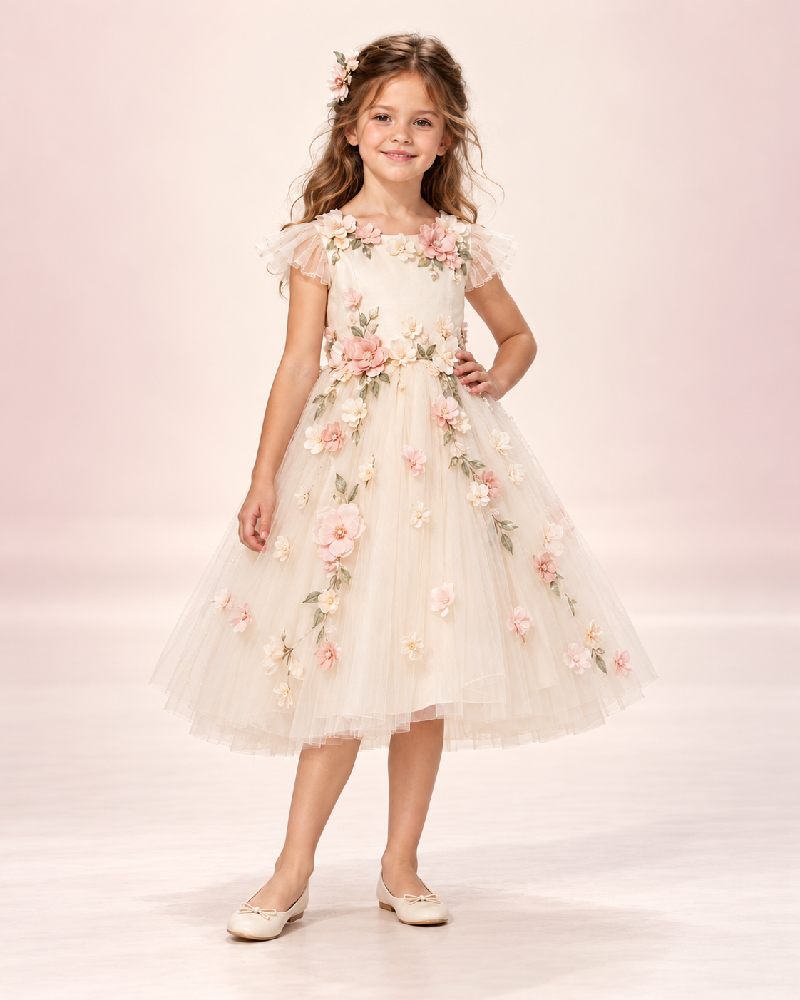

01 / THE BRIEF
A Dress for a Garden Wedding
This concept responds to an imagined client's request for a flower girl dress for an outdoor spring wedding. The design needed to complement a floral setting while feeling playful and appropriate for a young child.
The challenge was to balance decorative detail with a manageable length and a comfortable shape, allowing the child to enjoy the celebration.
02 / THE INSPIRATION
Flowers, Petals, and Soft Colour
An ivory base creates a gentle backdrop for blush flower appliques and muted green leaves. Floral details gather around the neckline and waist before trailing across the skirt, echoing the natural growth of garden plants.
Light flutter sleeves and an airy skirt complete the spring-inspired silhouette.
03 / THE DESIGN APPROACH
Thoughtful Details, Inside and Out
The proposed construction pairs a soft cotton lining with a lightweight tulle outer skirt. A comfortable waist and a mid-calf hem would leave room for walking and sitting.
A concealed back zip would simplify dressing, while securely attached floral decorations would help keep the finish neat. These choices would require testing through a physical sample and fitting.
04 / THE OUTCOME
The Garden Bloom Concept
The final visual concept brings together an ivory silhouette, dimensional flowers, and delicate leaf embroidery. It demonstrates how a wedding theme can inform children's occasion wear without losing a sense of play.
This project is a design exploration. A future prototype would test the fit, fabric weight, and durability of the details.
Discuss Your Own Design